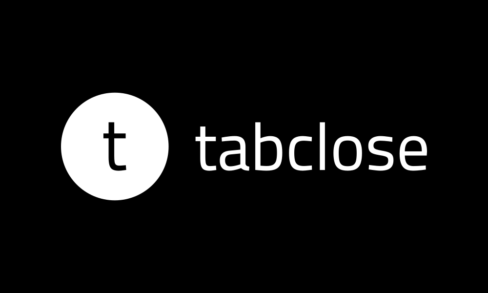

Automatic tab management for a cleaner browser
TabClose is a simple yet powerful Chrome extension that automatically closes inactive tabs, helping you maintain a clean browser and improve performance. No more drowning in hundreds of tabs!
Automatically close tabs after a customizable period of inactivity
Set a daily time to close all inactive tabs at once
Never closes pinned tabs, active tabs, or tabs playing audio
Protect important sites from being automatically closed
TabClose tracks when you last interacted with each tab and closes them based on your preferences:
gmail.com to keep those tabs safeClick the TabClose icon in your browser toolbar to open the settings popup.
Choose how long tabs should be inactive before closing (in minutes). Default is 360 minutes (6 hours).
Add domains you want to protect, such as:
gmail.com - Keep your email always opencalendar.google.com - Protect your calendarspotify.com - Keep music streaming tabsSet a daily time (e.g., 9:00 PM) to automatically close all inactive tabs at once.